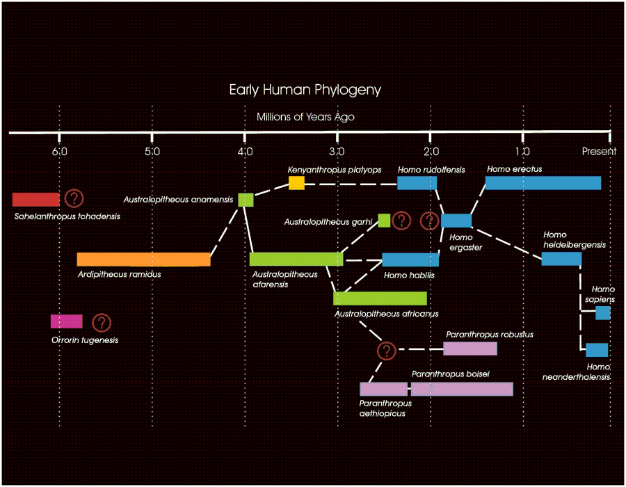

| Evolution on Television - November 2007 |
| by Do-While Jones |
An American TV show portrays cavemen as intellectually superior to Homo sapiens. Why the shift in public opinion?
Isn't it amazing how the "truth" about Neanderthal man has evolved since the 1900's?
|
Anatomically, Boule claimed, the Neanderthals had possessed divergent big toes (hence grasping feet, on which moreover, weight was borne, apelike, on the outer edges), a slouching posture, bent knees, short and thick necks, and inferior brains. 1 Boule was quite happy to accept the Neanderthals within the group Homo as Homo neanderthalensis; but, he wrote in 1913, in the final part of his long monograph on the La Chapelle-aux-Saints skeleton, "what a contrast with the ... Cro-Magnons, [who with their more elegant] bodies, finer heads, large and upright foreheads ... manual dexterity ... inventive spirit ... artistic and religious sensibilities ... [and] capacities for abstract thought were the first to deserve the glorious title of Homo sapiens!" 2 [ellipses and insertions Tatersall's] |
Neanderthals were thought to be barely human, and very stupid (despite having a brain 30% larger than modern humans). That was the opinion then, but not now. Opinions change because opinions aren't necessarily true. Now some scientists believe Neanderthal man was actually the same species as modern man, and interbred with them.
|
The nature of the interaction between Neanderthals and modern humans, who expanded out of Africa around 40,000-50,000 years ago and eventually replaced Neanderthals as well as other archaic hominids across the Old World is still a matter of some debate. Although there is no evidence of contemporaneous cohabitation at any single site, there is evidence of geographical and temporal overlap in their ranges before the disappearance of Neanderthals. Additionally, late in their history, some Neanderthal groups adopted cultural traits such as body decorations, potentially through cultural interactions with incoming modern humans. 3 In an effort to determine if modern humans and Neanderthals interbred, scientists examined DNA recovered from Neanderthal bones and compared it to modern human DNA. The authors of the study admit that this is a difficult undertaking, and the possibilities of error abound. Although it is possible to recover mtDNA and occasionally even nuclear DNA sequences from well-preserved remains of organisms that are less than a few hundred thousand years old, determination of ancient hominid sequences is fraught with special difficulties and pitfalls. In addition to degradation and chemical damage to the DNA that can cause any ancient DNA to be irretrievable or misread, contamination of specimens, laboratory reagents and instruments with traces of DNA from modern humans must be avoided. In fact, when sensitive polymerase chain reaction (PCR) is used, human mtDNA sequences can be retrieved from almost every ancient specimen. This problem is especially severe when Neanderthal remains are studied because Neanderthal and human are so closely related that one expects to find few or no differences between Neanderthals and modern humans within many regions, making it impossible to rely on the sequence information itself to distinguish endogenous from contaminating DNA sequences. A necessary first step for sequencing nuclear DNA from Neanderthals is therefore to identify a Neanderthal specimen that is free or almost free of modern human DNA. We tested more than 70 Neanderthal bone and tooth samples from different sites in Europe and western Asia for bio-molecular preservation by removing samples of a few milligrams for amino acid analysis. The vast majority of these samples had low overall contents of amino acids and/or high levels of amino acid racemization, a stereoisomeric structural change that affects amino acids in fossils, indicating that they are unlikely to contain retrievable endogenous DNA. However, some of the samples are better preserved in that they contain high levels of amino acids (more than 20,000 p.p.m.), low levels of racemization of amino acids such as aspartate that racemize rapidly, as well as amino acid compositions that suggest that the majority of the preserved protein stems from collagen. 4 |
In other words, they were very careful to avoid contamination. They came to the conclusion that Neanderthals and modern humans interbred, which makes them, by definition, the same species. This is a conclusion that some scientists find unacceptable.
|
A groundbreaking analysis of Neanderthal DNA that suggested they interbred with humans was based on samples contaminated with human DNA, a new study suggests. The study, published on 28 August [2007] in PLoS Genetics, reanalysed about one million base pairs of fossilized Neanderthal DNA that had been analysed in a paper published last November [2006] in Nature. The Nature paper and a paper in Science published the same week on 65,000 base pairs were the first reports on Neanderthal nuclear DNA. But around 80% of the sequences in the Nature paper are modern human DNA, not Neanderthal, claims Jeffrey Wall, an evolutionary geneticist at the University of California, San Francisco, who led the PLoS Genetics study. 5 |
Wall claims 80% contamination, but the authors of the study claim the contamination was less than 6%.
|
Figure 1 shows that the level of contamination differs drastically among the samples. Whereas only around 1% of the mtDNA present in three samples from France, Russia and Uzbekistan was Neanderthal-like, one sample from Croatia and one from Spain contained around 5% and 75% Neanderthal-like mtDNA, respectively. One bone (Vi-80) from Vindija Cave, Croatia, stood out in that ~99% of the 63-base-pair mtDNA segments and ~94% of the 119-base pair segments are of Neanderthal origin. Assuming that the ratio of Neanderthal to contaminating modern human DNA is the same for mtDNA as it is for nuclear DNA, the Vi-80 bone therefore yields DNA fragments that are predominantly of Neanderthal origin and provided that the contamination rate was not increased during the downstream sequencing process, the extent of contamination in the final analyses is below ~6%. 6 |
How do they know what is contamination and what isn't? Suppose you put sugar on your corn flakes and start eating breakfast when you realize that something doesn't taste right. You take some of the white crystals from the sugar bowl into the lab and analyze it. You find a mixture of sugar and salt. Someone by accident, or as a joke, has put salt in your sugar bowl and contaminated it. But suppose you analyze the crystals in your salt shaker and find a mixture of sugar and salt. In this case, sugar is the contaminant. How do you know what is contamination and what is pure? The answer is simple. You already know what is supposed to be there, and what isn't.
At the risk of bringing up painful college memories, think back to your first semester chemistry lab. The lab instructor hands you a test tube of "unknown," and you have to see how it reacts with a variety of chemicals to figure out what is in the test tube. Suppose one of the ingredients you discover is sodium chloride. Was that supposed to be in the sample? or did a drop of sweat fall from the face of your very nervous lab partner into the test tube contaminating it? You don't know because you don't know what was supposed to be in the test tube.
Some evolutionists claim that 98% of modern chimpanzee DNA is identical to human DNA. Shouldn't those evolutionists believe that at least 98% of Neanderthal DNA is identical to modern human DNA? If so, how can one claim that modern DNA in Neanderthal is contamination? How do they know what should, and should not, be in Neanderthal DNA?
Contamination is the excuse evolutionists commonly use when laboratory tests don't match expectations. If a lava sample tests too old, they say it must be contaminated by excess Argon 40. If Neanderthal DNA turns out to be too much like modern human DNA, then "around 80% of the sequences in the Nature paper are modern human DNA, not Neanderthal."
In the early 1900's, evolutionists needed a missing link between humans and apes. They tried to make Neanderthal man into that missing link. The evidence is pretty clear that Neanderthal man was fully human. If he was, then there is no evidence of evolution. The Neanderthal breed of humans is no more significant to the theory of evolution than the bulldog and boxer breeds of dogs. If Neanderthals are just people with slightly differently shaped bodies, then the only difference between them and pygmies is that Neanderthals are extinct. The fact that Neanderthals didn't have computers doesn't mean they were less intelligent--it merely means they knew how to live without computers.
Evolutionary opinions about our supposed cavemen ancestors keep changing because they have no solid foundation. The opinions are simply speculation about ways that evolution might have happened. The vacillation isn't limited to Neanderthal man. Scientists now question whether or not Lucy belongs in our family tree.
Regardless of whether or not modern humans interbred with Neanderthals, we certainly didn't have sex with Lucy.
|
Perhaps the world's most famous early human ancestor, the 3.2-million-year-old ape "Lucy" was the first Australopithecus afarensis skeleton ever found, though her remains are only about 40 percent complete. 7 |
In many museums (including Ridgecrest's own Biblical Archeology and Anthropology Museum) you can see replicas of Lucy's skeleton. The actual bones are usually kept away from public view (for safekeeping) in Ethiopia. Currently there is some controversy because the actual bones are going on tour to the United States as a fund-raising promotion. Some people think that the risk of damage outweighs the financial gain. People will pay money to see the actual bones because Lucy is supposedly proof of human evolution. They won't pay as much to see Lucy if it turns out that they are just bones of an extinct ape.
The Smithsonian Institute web page 8 shows where Australopithecus afarensis fits in our supposed family tree, between Australopithecus anamensis and Homo habilis.
 |
|---|
The Lucy tour promoters must be hoping that not many people read the April 17, 2007, issue of the Proceedings of the National Academy of Science.
|
Mandibular ramus morphology on a recently discovered specimen of Australopithecus afarensis closely matches that of gorillas. This finding was unexpected given that chimpanzees are the closest living relatives of humans. ... The presence of the morphology in both the latter and Au. afarensis and its absence in modern humans cast doubt on the role of Au. afarensis as a modern human ancestor. 9 |
Some scientists think that Homo habilis evolved from Australopithecus afarensis because of the shape of the bones. Other scientists don't think the bones are the right shape. But scientists are just people with opinions, and bone shapes are not conclusive evidence of paternity. Deadbeat dads aren't hauled into court to pay child support just because of the shape of their bones. There is no proof that Australopithecus afarensis was a human ancestor.
| Quick links to | |
|---|---|
| Science Against Evolution Home Page |
Back issues of Disclosure (our newsletter) |
| Web Site of the Month |
Topical Index |
Footnotes:
1
Tatersall, 1995, The Fossil Trail, Oxford University Press, Inc., page 45
2
ibid., page 46
3
Green, et al., Nature, 16 November 2006, "Analysis of one million base pairs of Neanderthal DNA", pages 330-336, https://www.nature.com/articles/nature05336
4
ibid.
5
Nature, 6 September 2007, "DNA probe finds hints of human", page 7, https://www.nature.com/articles/449007a
6
Green, et al., Nature, 16 November 2006, "Analysis of one million base pairs of Neanderthal DNA", pages 330-336, https://www.nature.com/articles/nature05336
7
National Geographic News, September 20, 2006, "What Was 'Lucy'? Fast Facts on an Early Human Ancestor", http://news.nationalgeographic.com/news/2006/09/060920-lucy.html
8
http://anthropology.si.edu/humanorigins/ha/a_tree.html
9
Rak, et al., PNAS, April 17, 2007, "Gorilla-like anatomy on Australopithecus afarensis mandibles suggests Au. afarensis link to robust australopiths", pages 6568-6572, https://www.pnas.org/content/104/16/6568